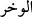

sabreden; fakat tâûna uğramadan vefât eden kimsenin Allah yolunda murâbıt sayılarak
kabir fitnesinden korunduğu bildirilmiştir.
Allah’ın hükmüne rızâ göstererek tâûna sabreden ve bu yüzden ölen ile ishâl, böbrek
yetmezliği ve benzeri karın ağrılarından ölenlerin şehîd hükmünde olacağı belirtilmiştir.
Çünkü bunlar ölünceye dek şuûrlarını kaybetmezler. Aynı şekilde suda boğulanlar,
göçük altında kalıp ölenler, Allah yolunda öldürülenler, ateşte yananlar, akciğer iltihâbı
rahatsızlığından ölenler, çocuğu karnında iken ölen hâmile kadınlar, şehîd
hükmündedirler. Çünkü bunların ölümleri, zâtülcenb, baygınlık veren ateşli hastalık,
kulunç, mide sancısı ve böbrek taşından ölenlerin ölümüne benzemez. Bu hastalıkların
acısı hastanın tabîatını ve beynini fesâda uğratıp şuûrunu yok eder.
Tâûn, insanlar arasında çokça görülen ve yalnız bir çeşidi bulunan bir hastalıktır.
Vebâ ise tâûnla beraber veya onsuz olabilen yaygın bir hastalıktır.
Hadis-i şerifte: “Ümmetimin yok oluşu yaralama ve tâûn ile olacaktır”
buyurulmuştur. Sahâbîler: “Ya Rasûlallah tâûnu anladık, ama yaralanma nedir?” deyince
Efendimiz: “Cinlerden olan düşmanlarınızın sizi yaralamasıdır. Böyle ölen herkes
şehîd olur.”[289] buyurmuşlardır.
İbnü’l-Esîr, yaralamadan maksadın mızrakla öldürülme olduğunu söylemiştir.
Yaralama mânâsına gelen “Vahr” ( __WORD__ ) vücûda batırmadan dürtmek, demektir. Bu
hadis, cinlerin şerriyle alâkalı şu hadîsle çelişmez. Peygamber Efendimiz, “cinlerin
karnın alt tarafından bâzı damarları dürttüklerini ve buralarda deve uru gibi, bir
şeyler çıktığını” haber vermiştir.[290] “Gudde” ette çıkan beze ve ur gibi bir şeydir.
Cinler, karın bölgesindeki damarları dürterek oradan “ur” çıkmasına sebeb olurlar.
Bir hadiste şöyle buyurulmuştur: “Tartılar eksik yapılınca yağmur kesilir, zinâ
çoğalınca öldürmeler çoğalır, yalan çoğalınca anarşi ve kargaşa artar.”[291] Bunun
hikmeti şudur: Zina nesli yok etmektir. Zira veled-i zinâ hükmen helâk olmuştur. Suçun
cezâsı kendi cinsinden olacağı için zinânın da cezâsı ölümlerin artmasıdır. Aynı şekilde
alışverişte tartıyı eksik tutmak, yağmurun kesilmesiyle cezâlandırılır ki bu, insanların
rızkını azaltır. Yalan ise insanlar arasında düşmanlık ve ayrılık meydana getirir. Yalan,
kargaşa, fitne ve şuûr bulanıklığı ile cezâlandırılır. Bu günahların işlendiği yerlerde
belâlar herkesi kapsar. Bu tür belâların yaygınlaşması, şeytanın yandaşlarına cezâ,
mü’minlere ise rahmet ve şehîdlik vesîlesi olur. Çünkü ölüm, müslümanlar için bir
hediye, fâsıklar için musîbettir. Sâlih kullar bu tür belâ ve ölümlerle şehâdete ve
Allah’ın rahmetine kavuşurlar. Bu derdlerden ölen herkes amellerine ve niyetlerine göre
diriltilip mükâfât veya cezâ görürler. Tâûndan kaçmak, fâil-i muhtâr olan Allah’ı
görmezden gelmek demek olduğu için yasaktır. Nitekim İbn Mes’ûd (r.a.) şöyle
demiştir: Tâûn, ondan kaçana da kaçmayana da fitnedir. Kaçan “kaçtığım için
kurtuldum” der. Kaçmayan da “kaçmadığım için ölüyorum” der.
Hadiste: “Tâûndan kaçmak, ordudan kaçmak gibidir. Tâûna sabreden, orduda
sabreden gibidir”[292] buyurulmuştur.[293] Kalabalığı ve çokluğu dolayısıyla hareket